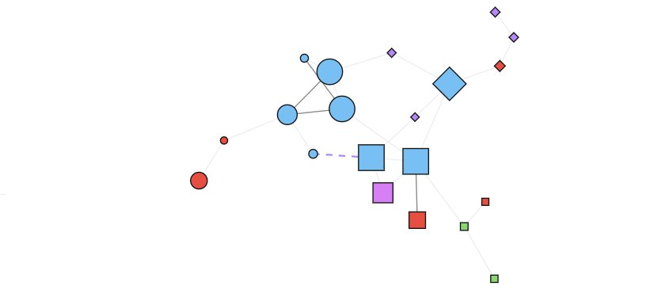
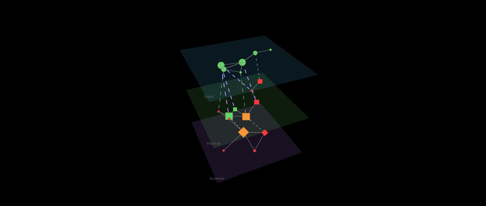

How the showcase worksWie das Showcase funktioniert
This documentation explains what the showcase demonstrates and how to read it. It covers the structural quantities behind the visualisation, the four-state logic, and each of the eight scenarios. It deliberately stays at the level of observable behaviour — the underlying model mechanics are not part of the public showcase. Diese Dokumentation erklärt, was das Showcase zeigt und wie es zu lesen ist. Sie behandelt die strukturellen Größen hinter der Visualisierung, die vierstufige Zustandslogik und jedes der acht Szenarien. Sie bleibt bewusst auf der Ebene des beobachtbaren Verhaltens — die zugrunde liegende Modellmechanik ist nicht Teil des öffentlichen Showcases.
Structural early-warning, one layer below the symptomsStrukturelle Frühwarnung, eine Ebene unter den Symptomen
A system is modelled as a network of nodes connected by coupled edges. Rather than waiting for a component to breach a threshold, the showcase observes where structural stress accumulates across that network — so the loss of load-bearing coupling becomes visible while there is still room to act. Ein System wird als Netzwerk aus Knoten modelliert, die über gekoppelte Kanten verbunden sind. Statt zu warten, bis eine Komponente eine Schwelle überschreitet, beobachtet das Showcase, wo sich struktureller Stress über dieses Netzwerk aufbaut — sodass der Verlust tragfähiger Kopplung sichtbar wird, solange noch Handlungsspielraum besteht.
Four structural quantitiesVier strukturelle Größen
The showcase reads four load-bearing properties of the system. Each can be approximated through observable signals, without exposing how the model computes them. Das Showcase liest vier tragende Eigenschaften des Systems. Jede lässt sich über beobachtbare Signale annähern, ohne offenzulegen, wie das Modell sie berechnet.
How strongly parts depend on each otherWie stark Teile voneinander abhängen
Observable proxies:Beobachtbare Proxys:
- Share of services over a shared dependency (central auth path, shared region)Anteil Dienste über gemeinsame Abhängigkeit (zentraler Auth-Pfad, geteilte Region)
- Fan-in / fan-out of critical servicesFan-in / Fan-out kritischer Services
- Share of synchronous vs. buffered callsAnteil synchroner statt gepufferter Aufrufe
Whether connections still stabilise each otherOb Verbindungen sich noch gegenseitig stabilisieren
Observable proxies:Beobachtbare Proxys:
- Correlated errors/latency across nominally independent services (shared fate)Korrelierte Fehler/Latenz über eigentlich unabhängige Dienste (gemeinsames Schicksal)
- Simultaneous alert clustersZeitgleiche Alarm-Cluster
- Consistency of health signals across replicasKonsistenz der Health-Signale über Replikate
How much load-bearing buffer remainsWie viel tragfähiger Puffer bleibt
Observable proxies:Beobachtbare Proxys:
- Utilisation vs. available headroom (pools, quotas, rate limits)Auslastung gegen verfügbaren Headroom (Pools, Quotas, Rate-Limits)
- Remaining redundancyVerbleibende Redundanz
- Saturation of queues and retriesSättigung von Queues und Retries
How fast structural load-bearing is lostWie schnell strukturelle Tragfähigkeit verloren geht
Observable proxies:Beobachtbare Proxys:
- Trend in recovery time and failed-change rateTrend von Wiederherstellungszeit und Rate fehlgeschlagener Änderungen
- Frequency of near-misses and brownoutsHäufigkeit von Near-Misses und Brownouts
- Rise in manual interventions and workaroundsZunahme manueller Eingriffe und Workarounds
From state to action: four levelsVom Zustand zur Handlung: vier Stufen
The structural state is reduced to a single, readable signal. Each level is tied to one class of action. Thresholds are context-dependent, not fixed. Der strukturelle Zustand wird auf ein einziges, lesbares Signal reduziert. Jede Stufe ist an genau eine Handlungsklasse gekoppelt. Die Schwellen sind kontextabhängig, nicht starr.
Same engine, different networked systemsGleiche Engine, unterschiedliche vernetzte Systeme
01 · Basic / PlaybackBasis / Playback
A step-by-step walk-through of the core mechanics — the best place to start.Eine schrittweise Einführung in die Kernmechanik — der beste Einstieg.
02 · Energy Crisis 2020–2030Energiekrise 2020–2030
52 events across 126 months over coupled supply channels, each transport route modelled as its own edge.52 Ereignisse über 126 Monate über gekoppelte Versorgungskanäle, jede Transportroute als eigene Kante modelliert.
03 · Pandemic 2020–2030Pandemie 2020–2030
Health capacity and economic output under sustained, coupled pressure.Gesundheitskapazität und Wirtschaftsleistung unter anhaltendem, gekoppeltem Druck.
04 · Eurozone Financial StabilityEurozone-Finanzstabilität
Stress propagation across financial nodes and their bridges into the wider economy.Stressausbreitung über Finanzknoten und ihre Brücken in die weitere Wirtschaft.
05 · Cloud & Cyber ResilienceCloud- & Cyber-Resilienz
Concentration risk and failure paths across cloud, identity and platform dependencies.Konzentrationsrisiko und Ausfallpfade über Cloud-, Identitäts- und Plattform-Abhängigkeiten.
06 · Critical InfrastructureKritische Infrastruktur
Interdependent sectors with substitution edges and cross-space bridges.Interdependente Sektoren mit Substitutionskanten und Cross-Space-Brücken.
07 · Banking Build-PipelineBanking-Build-Pipeline
A DACH Tier-1 delivery pipeline, framed around DORA operational-resilience themes.Eine DACH-Tier-1-Delivery-Pipeline, ausgerichtet auf DORA-Themen der operativen Resilienz.
08 · DORA ICT Third-Party (CTPP)DORA IKT-Drittparteien (CTPP)
Concentration among critical third-party providers, made visible as structure rather than a list.Konzentration unter kritischen Drittdienstleistern, sichtbar als Struktur statt als Liste.
Why there are several viewsWarum es mehrere Ansichten gibt
The same network can be looked at in different ways, because different questions need different views. One arrangement reveals concentration; another reveals how a shock cascades between layers; another reveals the overall coupling structure. The view is a lens, not decoration — each one answers a question the others answer less well. The 3D views can be rotated and zoomed to inspect structure from any angle. Dasselbe Netzwerk lässt sich unterschiedlich betrachten, weil verschiedene Fragen verschiedene Ansichten brauchen. Eine Anordnung zeigt Konzentration; eine andere, wie ein Schock zwischen Ebenen kaskadiert; eine weitere die Gesamtstruktur der Kopplung. Die Ansicht ist eine Linse, kein Dekor — jede beantwortet eine Frage, die die anderen weniger gut beantworten. Die 3D-Ansichten lassen sich drehen und zoomen, um die Struktur aus jedem Winkel zu prüfen.
Full per-node detailVollständiges Knoten-Detail
Question: which individual node or edge is under stress right now?Frage: welcher einzelne Knoten oder welche Kante steht gerade unter Stress?
Colour encodes stress, the symbol shape encodes which resonance space a node belongs to. The flat layout keeps every element legible at once — the best view for reading detail.Die Farbe kodiert Stress, die Symbolform kodiert, zu welchem Resonanzraum ein Knoten gehört. Das flache Layout hält jedes Element gleichzeitig lesbar — die beste Ansicht für Details.

Stress cascading between spacesStress-Kaskade zwischen Räumen
Question: how does a shock travel from one layer to the next?Frage: wie wandert ein Schock von einer Ebene zur nächsten?
Each resonance space becomes its own stacked layer; stress cascades top to bottom. Cross-space bridges are drawn near-vertical, so the connections that carry risk between domains stand out — exactly where compound risk lives.Jeder Resonanzraum wird zu einer eigenen gestapelten Ebene; Stress kaskadiert von oben nach unten. Cross-Space-Brücken werden nahezu senkrecht gezeichnet, sodass die risikotragenden Verbindungen zwischen Domänen hervortreten — genau dort, wo Compound Risk entsteht.

Concentration and cluster membershipKonzentration und Cluster-Zugehörigkeit
Question: where do dependencies concentrate?Frage: wo konzentrieren sich Abhängigkeiten?
Translucent hulls group nodes by cluster. Dense, tightly bound hulls reveal where the system concentrates — the single points of systemic failure that a flat list of providers would hide.Durchscheinende Hüllen gruppieren Knoten nach Cluster. Dichte, eng gebundene Hüllen zeigen, wo das System konzentriert — die Single Points of Systemic Failure, die eine bloße Anbieterliste verbergen würde.
3D Clustering — translucent cluster hullsSCREENSHOT
3D Clustering — durchscheinende Cluster-Hüllen
Overall coupling structureGesamtstruktur der Kopplung
Question: what does the system's coupling look like as a whole?Frage: wie sieht die Kopplung des Systems als Ganzes aus?
A free 3D force layout positions nodes by their connections, not by predefined layers. Central, densely linked nodes pull together; loosely coupled ones drift to the edge — the shape of the system emerges from its structure.Ein freies 3D-Force-Layout positioniert Knoten nach ihren Verbindungen, nicht nach vordefinierten Ebenen. Zentrale, dicht verbundene Knoten ziehen sich zusammen; lose gekoppelte wandern an den Rand — die Form des Systems entsteht aus seiner Struktur.
3D Topology — free force layoutSCREENSHOT
3D Topology — freies Force-Layout
Three more analytical viewsDrei weitere analytische Ansichten
Stress over timeStress über die Zeit
Nodes or clusters as rows, time steps as columns. Makes the moment a shock propagates visible as a horizontal band — and shows which parts stay calm.Knoten oder Cluster als Zeilen, Zeitschritte als Spalten. Macht den Moment der Schock-Ausbreitung als horizontales Band sichtbar — und zeigt, welche Teile ruhig bleiben.
Coupling throughputKopplungs-Durchsatz
Flow view of how much coupling runs along the edges between spaces. Band width shows where load actually flows — and where it bottlenecks.Fluss-Ansicht, wie viel Kopplung über die Kanten zwischen Räumen läuft. Die Bandbreite zeigt, wo Last tatsächlich fließt — und wo sie sich staut.
Strongest propagation chainsStärkste Ausbreitungsketten
The top structural risk paths — the strongest stress-propagation chains — overlaid on the network. Shows the routes along which a local disturbance would most likely cascade.Die wichtigsten strukturellen Risikopfade — die stärksten Stress-Ausbreitungsketten — über das Netzwerk gelegt. Zeigt die Routen, entlang derer eine lokale Störung am ehesten kaskadiert.
Profiles: how you look, not who looksProfile: wie du schaust, nicht wer schaut
A profile presets the most useful view for a given intent and de-emphasises what does not serve it. The profiles are functional, not role-named — they apply across every scenario, whether energy, pandemic, financial or ICT. Ein Profil stellt die nützlichste Ansicht für eine bestimmte Absicht voreinstellt und tritt zurück, was ihr nicht dient. Die Profile sind funktional, nicht rollenbenannt — sie gelten über jedes Szenario hinweg, ob Energie, Pandemie, Finanzen oder IKT.
The critical signals to look forDie kritischen Signale
Across every view, a small set of visual cues marks where structure is under strain.Über alle Ansichten hinweg markiert ein kleiner Satz visueller Hinweise, wo Struktur unter Belastung steht.
What this is — and is notWas dies ist — und was nicht
This is an experimental, structural simulation showcase — not a forecasting tool and not a prediction of specific events. It does not replace established risk, security or compliance frameworks; it adds a structural view. The "earlier-warning" claim is framed as a falsifiable hypothesis and is not yet conclusively validated against benchmarks. Dies ist ein experimentelles, strukturelles Simulations-Showcase — kein Prognose-Tool und keine Vorhersage konkreter Ereignisse. Es ersetzt keine etablierten Risiko-, Security- oder Compliance-Frameworks; es ergänzt eine strukturelle Sicht. Der „Frühwarn"-Anspruch ist als falsifizierbare Hypothese formuliert und gegen Benchmarks noch nicht abschließend validiert.